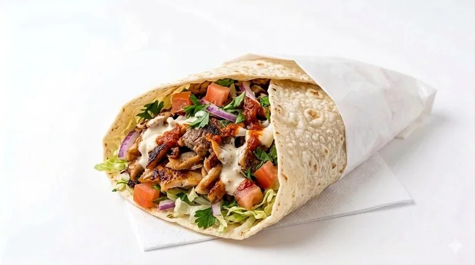

Riyad Marrakech · Da portare con te
Kebab e cucina marocchina
da asporto a Osimo.
Scegli panini, piadine, piatti e menù completi, oppure prenota in anticipo una delle preparazioni marocchine.
Come ordinare
Il servizio DISH del ristorante permette di scegliere le proposte disponibili e verificare il prezzo dell’ordine. Per richieste particolari puoi telefonare al locale.
Piatti marocchini su prenotazione
Antipasti marocchini, tajine e couscous richiedono un giorno di anticipo. Verifica con il personale la disponibilità per il giorno scelto.
Ritiro al ristorante
Via Ungheria 6, 60027 Osimo (AN). Gli orari e gli slot degli ordini sono confermati nel servizio DISH; possono differire dagli orari di apertura del locale.
Indicazioni stradali
Ingredienti e allergeni
Prima di ordinare, segnala al personale eventuali allergie o intolleranze. Le descrizioni del menù non costituiscono un elenco completo degli allergeni.
Orari e contatti del locale